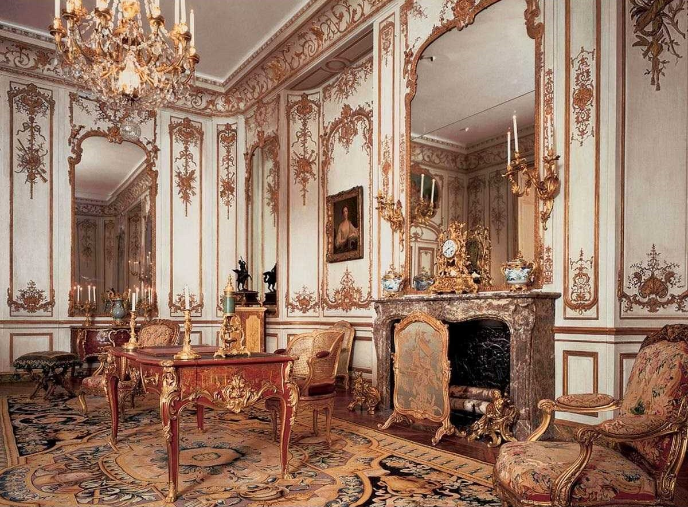

Stil
rococo
Rococo este un stil arhitectural, decorativ, artistic și de design interior care a fost generat în Franța secolului al XVIII-lea, dar care s-a răspândit ulterior în întreaga Europă și apoi în cele două Americi, mai ales în ceea ce se numește America latină, adică în țările de limbă spaniolă și portugheză.
Considerat adesea ca o perioadă relativ târzie din evoluția barocului, fiind caracterizat mai ales de bogăția și varietatea detaliilor și a ornamentelor, respectiv de exagerarea caracteristicilor barocului până la opulență, rococo este privit astăzi ca o perioadă relativ distinctă în evoluția artei occidentale. Spre sfârșitul perioadei sale de existență, a devenit relativ sincron și de multe ori s-a apropiat sensibil de neoclasicism.
|  |
Aidoma arhitecturii, interioarele rococo ridică ornamentarea bogată, în toate aspectele sale, la rang de postulat. Astfel, interioarele rococo prezintă similar fațadelor clădirilor timpului, pereți pictați și ornamentați (uneori chiar tavanele fiind decorate similar pereților), mobilier impozant, masiv și elaborat ornamentat, sculpturi de dimensiuni mici și medii, oglinzi de diferite dimensiuni, tapițerii în ton cu arhitectura, multiple reliefuri aplicate și, evident, picturi în ulei de diferite dimensiuni.
Bogăția ornamentației vecină cu opulența, curbele ornamentale infinit încolăcite folosite cu perseverenţă, respectiv accentuarea cu precădere a artelor decorative și a designului interior, au creat un fel de tratare cu indulgență superioară a întregului curent în prima treime a secolului al XIX-lea, când rococo-ul atinsese apogeul său. Oricum, relativ repede, termenul de rococo s-a impus în lumea criticii de artă a anilor 1850, nemaifiind privit peiorativ, ca ceva vetust ci, așa cum o merita, ca o întreagă perioadă artistică marcantă.